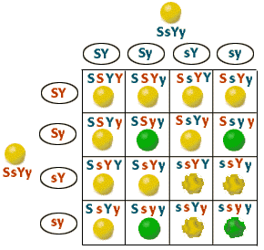

Dihybrid Cross
Problem 9: Homozygous offspring of a dihybrid cross, again.
Tutorial to help answer the question
In a dihybrid cross, SsYy x SsYy, what fraction of the offspring will be homozygous for both traits?
Predicting the genotype of offspring
|
The solution for predicting the outcome of an SsYy x SsYy genetic cross was given in detail in the tutorials for problem 2 and problem 3 . Review the answers to these problems if necessary. These are the possible combinations of gametes for this cross. |
 |